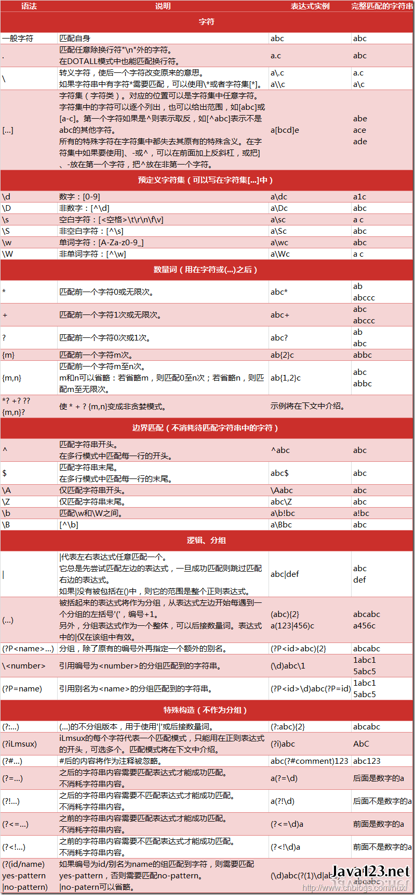
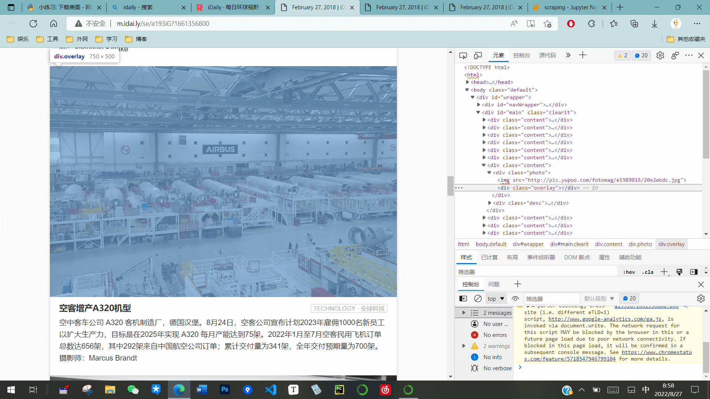
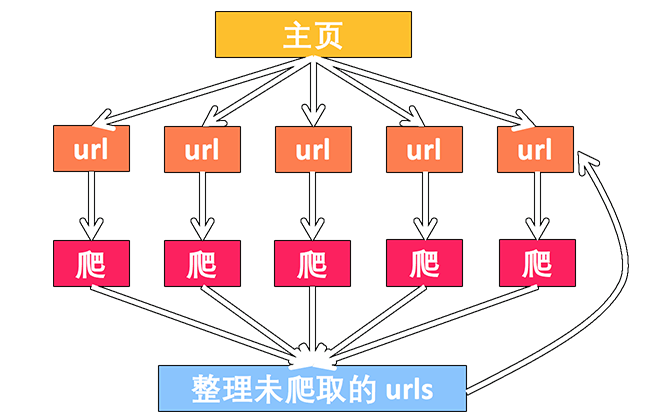
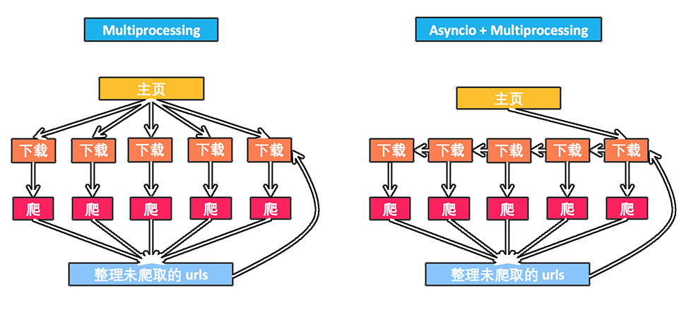
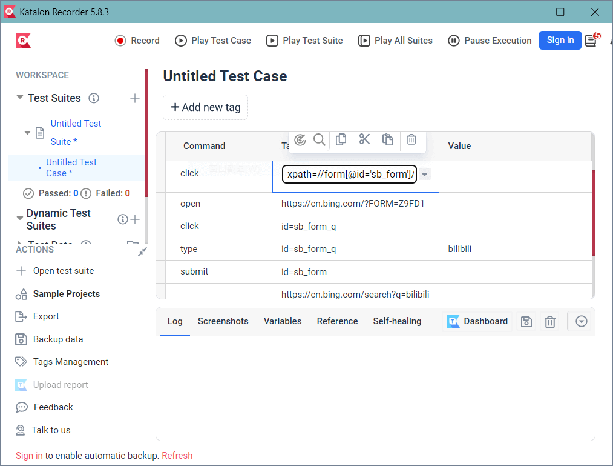
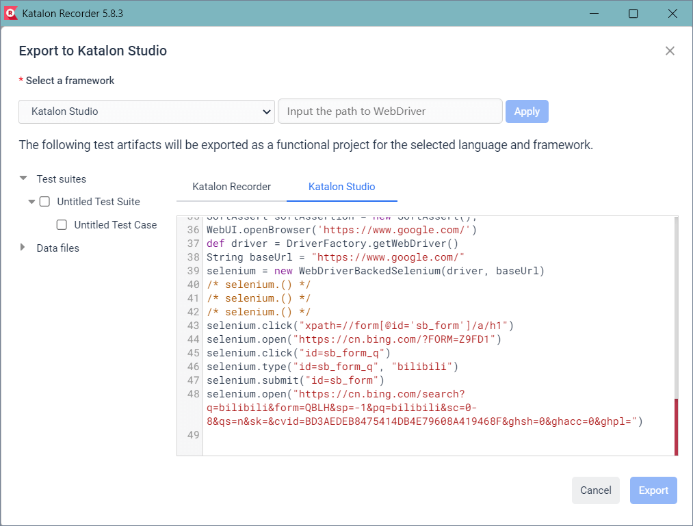
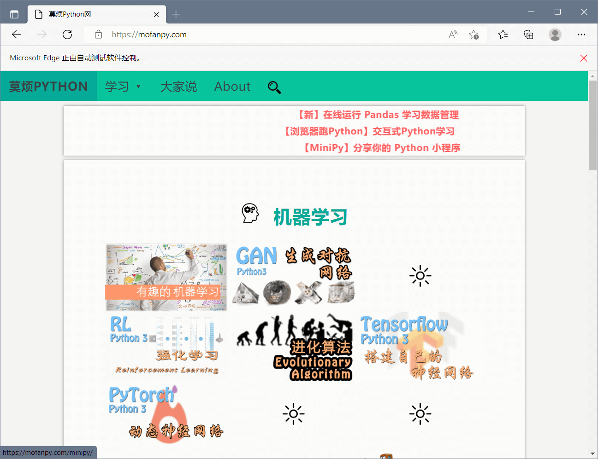
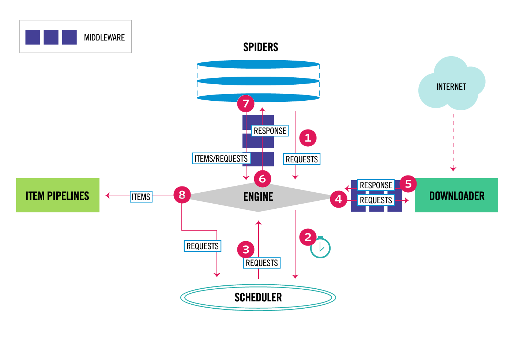

官网
课程
1.1 了解网页结构
查看网页源代码
爬取网页: Scraping tutorial 1 | 莫烦 Python
1 2 3 4 5 6 7 8 9 10 11 12 13 14 15 16 <!DOCTYPE html > <html lang ="cn" > <head > <meta charset ="UTF-8" > <title > Scraping tutorial 1 | 莫烦 Python</title > <link rel ="icon" href ="https://morvanzhou.github.io/static/img/description/tab_icon.png" > </head > <body > <h1 > 爬虫测试 1</h1 > <p > <a href ="https://morvanzhou.github.io/" > 莫烦 Python</a > <a href ="https://morvanzhou.github.io/tutorials/data-manipulation/scraping/" > 爬虫教程</a > 中的简单测试.</p > </body > </html >
1 2 3 4 5 6 7 from urllib.request import urlopen"https://yulizi123.github.io/static/scraping/basic-structure.html" 'utf-8' )print (html)
<!DOCTYPE html>
<html lang="cn">
<head>
<meta charset="UTF-8">
<title>Scraping tutorial 1 | 莫烦 Python</title>
<link rel="icon" href="https://morvanzhou.github.io/static/img/description/tab_icon.png">
</head>
<body>
<h1>爬虫测试 1</h1>
<p>
这是一个在 <a href="https://morvanzhou.github.io/">莫烦 Python</a>
<a href="https://morvanzhou.github.io/tutorials/data-manipulation/scraping/">爬虫教程</a> 中的简单测试.
</p>
</body>
</html>
先导: 正则表达式 Regular Expression
教程:
正则表达式 (Regular Expression) 又称 RegEx, 是用来匹配字符的一种工具. 在一大串字符中寻找你需要的内容. 它常被用在很多方面, 比如网页爬虫, 文稿整理, 数据筛选等等.
从浏览器中读取的代码中找到有用的信息
简单 Python 匹配
1 2 3 4 5 pattern1 = "cat" "bird" "dog runs to cat" print (pattern1 in string)print (pattern2 in string)
True
False
用正则表达式寻找配对
1 2 3 4 5 6 7 import re"cat" "bird" "dog runs to cat" print (re.search(pattern1, string))print (re.search(pattern2, string))
<re.Match object; span=(12, 15), match='cat'>
None
在 string 12-15 之间找到了字符串 cat
匹配多种可能 使用[]
两种可能 run 或 ran
1 2 ptn = r"r[au]n" print (re.search(ptn, "dog runs to cat" ))
<re.Match object; span=(4, 7), match='run'>
匹配多种可能
1 2 3 4 print (re.search(r"r[A-Z]n" , "dog runs to cat" )) print (re.search(r"r[a-z]n" , "dag runs to cat" )) print (re.search(r"r[0-9]n" , "dog r1ns to cat" )) print (re.search(r"r[0-9a-z]n" , "dog runs to cat" ))
None
<re.Match object; span=(4, 7), match='run'>
<re.Match object; span=(4, 7), match='r1n'>
<re.Match object; span=(4, 7), match='run'>
特殊种类匹配
数字
1 2 3 4 print (re.search(r"r\dn" , "run r4n" ))print (re.search(r"r\Dn" , "run r4n" ))
<re.Match object; span=(4, 7), match='r4n'>
<re.Match object; span=(0, 3), match='run'>
空白
1 2 3 4 print (re.search(r"r\sn" , "r\nn r4n" ))print (re.search(r"r\Sn" , "r\nn r4n" ))
<re.Match object; span=(0, 3), match='r\nn'>
<re.Match object; span=(4, 7), match='r4n'>
所有数字和下划线_
1 2 3 4 print (re.search(r"r\wn" , "r\nn r4n" ))print (re.search(r"r\Wn" , "r\nn r4n" ))
<re.Match object; span=(4, 7), match='r4n'>
<re.Match object; span=(0, 3), match='r\nn'>
空白字符
1 2 3 4 5 6 print (re.search(r"\bruns\b" , "dog runs to cat" ))print (re.search(r"\bruns\b" , "dog runsto cat" ))print (re.search(r"\Bruns\B" , "dog runs to cat" ))print (re.search(r"\Bruns\B" , "dogrunsto cat" ))
<re.Match object; span=(4, 8), match='runs'>
None
None
<re.Match object; span=(3, 7), match='runs'>
特殊字符 任意字符
1 2 3 4 print (re.search(r"runs\\" , "runs\ to me" ))print (re.search(r"r.ns" , "r[ns to me" ))
<re.Match object; span=(0, 5), match='runs\\'>
<re.Match object; span=(0, 4), match='r[ns'>
句尾句首
1 2 3 4 print (re.search(r"^dog" , "dog runs to cat" ))print (re.search(r"cat$" , "dog runs to cat" ))
<re.Match object; span=(0, 3), match='dog'>
<re.Match object; span=(12, 15), match='cat'>
是否
1 2 3 print (re.search(r"Mon(day)?" , "Monday" ))print (re.search(r"Mon(day)?" , "Mon" ))
<re.Match object; span=(0, 6), match='Monday'>
<re.Match object; span=(0, 3), match='Mon'>
多行匹配
1 2 3 4 5 6 7 """ dog runs to cat. I run to dog. """ print (re.search(r"^I" , string))print (re.search(r"^I" , string, flags=re.M))
None
<re.Match object; span=(18, 19), match='I'>
0 或多次
1 2 3 print (re.search(r"ab*" , "a" ))print (re.search(r"ab*" , "abbbbbbb" ))
<re.Match object; span=(0, 1), match='a'>
<re.Match object; span=(0, 8), match='abbbbbbb'>
1 或多次
1 2 3 print (re.search(r"ab+" , "a" ))print (re.search(r"ab+" , "abbbbbbb" ))
None
<re.Match object; span=(0, 8), match='abbbbbbb'>
可选次数
1 2 3 print (re.search(r"ab{2,10}" , "a" ))print (re.search(r"ab{2,10}" , "abbbbb" ))
None
<re.Match object; span=(0, 6), match='abbbbb'>
group 组()
1 2 3 4 5 6 match = re.search(r"(\d+), Date: (.+)" , "ID: 021523, Date: Feb/12/2017" )print (match .group())print (match .group(1 ))print (match .group(2 ))
021523, Date: Feb/12/2017
021523
Feb/12/2017
组命名 ?P<组名>
1 2 3 4 match = re.search(r"(?P<id>\d+), Date: (?P<date>.+)" , "ID: 021523, Date: Feb/12/2017" )print (match .group())print (match .group("id" ))print (match .group("date" ))
021523, Date: Feb/12/2017
021523
Feb/12/2017
findall 寻找所有匹配
1 2 3 4 print (re.findall(r"r[ua]n" , "run ran ren" ))print (re.findall(r"r(u|a)n" , "run ran ren" ))print (re.findall(r"run|ran" , "run ran ren" ))
['run', 'ran']
['u', 'a']
['run', 'ran']
re.sub 替换
1 print (re.sub(r"r[au]ns" , "catches" , "dog runs to cat" ))
dog catches to cat
re.split 分裂
1 print (re.split(r"[,;\.]" , "a;b;c;d;e" ))
['a', 'b', 'c', 'd', 'e']
compile 先编译字符串
1 2 3 compile (r"r[ua]n" )print (compiled_re.search("dog ran to cat" ))
<re.Match object; span=(4, 7), match='ran'>
小抄

使用正则表达式爬取网页标题
1 2 3 4 5 import rer"<title>(.+?)</title>" , html)print ("\nPage title is: " , res[0 ])
Page title is: Scraping tutorial 1 | 莫烦 Python
找到段落信息
1 2 res = re.findall(r"<p>(.*?)</p>" , html, flags=re.DOTALL) print ("\nPage paragraphs: " , res[0 ])
Page paragraphs:
这是一个在 <a href="https://morvanzhou.github.io/">莫烦 Python</a>
<a href="https://morvanzhou.github.io/tutorials/data-manipulation/scraping/">爬虫教程</a> 中的简单测试.
查找所有超链接信息
1 2 res = re.findall(r'href="(.*?)"' , html)print ("\nAll links: " , res)
All links: ['https://morvanzhou.github.io/static/img/description/tab_icon.png', 'https://morvanzhou.github.io/', 'https://morvanzhou.github.io/tutorials/data-manipulation/scraping/']
2.1 BeautifulSoup 解析网页: 基础
Beautiful Soup 中文文档
可以使用 BeautifulSoup 进行一个高级的匹配!
1 pip install beautifulsoup4
Requirement already satisfied: beautifulsoup4 in c:\users\gzjzx\anaconda3\lib\site-packages (4.11.1)
Requirement already satisfied: soupsieve>1.2 in c:\users\gzjzx\anaconda3\lib\site-packages (from beautifulsoup4) (2.3.1)
Note: you may need to restart the kernel to use updated packages.
BeautifulSoup 简单的用法
导入网页信息
1 2 3 4 5 6 7 from bs4 import BeautifulSoupfrom urllib.request import urlopen"https://yulizi123.github.io/static/scraping/basic-structure.html" 'utf-8' )print (html)
<!DOCTYPE html>
<html lang="cn">
<head>
<meta charset="UTF-8">
<title>Scraping tutorial 1 | 莫烦 Python</title>
<link rel="icon" href="https://morvanzhou.github.io/static/img/description/tab_icon.png">
</head>
<body>
<h1>爬虫测试 1</h1>
<p>
这是一个在 <a href="https://morvanzhou.github.io/">莫烦 Python</a>
<a href="https://morvanzhou.github.io/tutorials/data-manipulation/scraping/">爬虫教程</a> 中的简单测试.
</p>
</body>
</html>
把获得的网页信息"喂给"BeautifulSoup
1 2 3 soup = BeautifulSoup(html, features='lxml' ) print (soup.h1) print ('\n' , soup.p)
<h1>爬虫测试 1</h1>
<p>
这是一个在 <a href="https://morvanzhou.github.io/">莫烦 Python</a>
<a href="https://morvanzhou.github.io/tutorials/data-manipulation/scraping/">爬虫教程</a> 中的简单测试.
</p>
1 2 3 all_href = soup.find_all('a' ) 'href' ] for l in all_href]print (all_href)
['https://morvanzhou.github.io/', 'https://morvanzhou.github.io/tutorials/data-manipulation/scraping/']
1 2 all_href = soup.find_all('a' )print (all_href)
[<a href="https://morvanzhou.github.io/">莫烦 Python</a>, <a href="https://morvanzhou.github.io/tutorials/data-manipulation/scraping/">爬虫教程</a>]
1 2 3 all_href = soup.find_all('a' )for l in all_href:print (l['href' ])
https://morvanzhou.github.io/
https://morvanzhou.github.io/tutorials/data-manipulation/scraping/
2.2 BeautifulSoup 解析网页: CSS
1 2 3 4 5 6 7 from bs4 import BeautifulSoupfrom urllib.request import urlopen"https://yulizi123.github.io/static/scraping/list.html" 'utf-8' )print (html)
<!DOCTYPE html>
<html lang="cn">
<head>
<meta charset="UTF-8">
<title>爬虫练习 列表 class | 莫烦 Python</title>
<style>
.jan {
background-color: yellow;
}
.feb {
font-size: 25px;
}
.month {
color: red;
}
</style>
</head>
<body>
<h1>列表 爬虫练习</h1>
<p>这是一个在 <a href="https://morvanzhou.github.io/" >莫烦 Python</a> 的 <a href="https://morvanzhou.github.io/tutorials/data-manipulation/scraping/" >爬虫教程</a>
里无敌简单的网页, 所有的 code 让你一目了然, 清晰无比.</p>
<ul>
<li class="month">一月</li>
<ul class="jan">
<li>一月一号</li>
<li>一月二号</li>
<li>一月三号</li>
</ul>
<li class="feb month">二月</li>
<li class="month">三月</li>
<li class="month">四月</li>
<li class="month">五月</li>
</ul>
</body>
</html>
1 2 3 4 5 6 soup = BeautifulSoup(html, features='lxml' )'li' , {"class" : "month" }) for m in month:print (m) print (m.get_text())
<li class="month">一月</li>
一月
<li class="feb month">二月</li>
二月
<li class="month">三月</li>
三月
<li class="month">四月</li>
四月
<li class="month">五月</li>
五月
1 2 jan = soup.find('ul' , {"class" : "jan" })print (jan)
<ul class="jan">
<li>一月一号</li>
<li>一月二号</li>
<li>一月三号</li>
</ul>
1 2 3 d_jan = jan.find_all('li' ) for d in d_jan:print (d.get_text())
一月一号
一月二号
一月三号
2.3 BeautifulSoup 解析网页: 正则表达
1 2 3 4 5 6 7 8 from bs4 import BeautifulSoupfrom urllib.request import urlopenimport re"https://yulizi123.github.io/static/scraping/table.html" 'utf-8' )print (html)
<!DOCTYPE html>
<html lang="cn">
<head>
<meta charset="UTF-8">
<title>爬虫练习 表格 table | 莫烦 Python</title>
<style>
img {
width: 250px;
}
table{
width:50%;
}
td{
margin:10px;
padding:15px;
}
</style>
</head>
<body>
<h1>表格 爬虫练习</h1>
<p>这是一个在 <a href="https://morvanzhou.github.io/" >莫烦 Python</a> 的 <a href="https://morvanzhou.github.io/tutorials/data-manipulation/scraping/" >爬虫教程</a>
里无敌简单的网页, 所有的 code 让你一目了然, 清晰无比.</p>
<br/>
<table id="course-list">
<tr>
<th>
分类
</th><th>
名字
</th><th>
时长
</th><th>
预览
</th>
</tr>
<tr id="course1" class="ml">
<td>
机器学习
</td><td>
<a href="https://morvanzhou.github.io/tutorials/machine-learning/tensorflow/">
Tensorflow 神经网络</a>
</td><td>
2:00
</td><td>
<img src="https://morvanzhou.github.io/static/img/course_cover/tf.jpg">
</td>
</tr>
<tr id="course2" class="ml">
<td>
机器学习
</td><td>
<a href="https://morvanzhou.github.io/tutorials/machine-learning/reinforcement-learning/">
强化学习</a>
</td><td>
5:00
</td><td>
<img src="https://morvanzhou.github.io/static/img/course_cover/rl.jpg">
</td>
</tr>
<tr id="course3" class="data">
<td>
数据处理
</td><td>
<a href="https://morvanzhou.github.io/tutorials/data-manipulation/scraping/">
爬虫</a>
</td><td>
3:00
</td><td>
<img src="https://morvanzhou.github.io/static/img/course_cover/scraping.jpg">
</td>
</tr>
</table>
</body>
</html>
查找所有图片链接
1 2 3 4 5 soup = BeautifulSoup(html, features='lxml' )"img" , {"src" : re.compile ('.*?\.jpg' )})for link in img_links:print (link['src' ])
https://morvanzhou.github.io/static/img/course_cover/tf.jpg
https://morvanzhou.github.io/static/img/course_cover/rl.jpg
https://morvanzhou.github.io/static/img/course_cover/scraping.jpg
设定特定的匹配规则
1 2 3 4 course_links = soup.find_all('a' , {'href' : re.compile ('https://morvan.*' )})for link in course_links:print (link['href' ])
https://morvanzhou.github.io/
https://morvanzhou.github.io/tutorials/data-manipulation/scraping/
https://morvanzhou.github.io/tutorials/machine-learning/tensorflow/
https://morvanzhou.github.io/tutorials/machine-learning/reinforcement-learning/
https://morvanzhou.github.io/tutorials/data-manipulation/scraping/
2.4 小练习: 爬百度百科
设置源地址
1 2 3 4 5 6 7 from bs4 import BeautifulSoupfrom urllib.request import urlopenimport reimport random"https://baike.baidu.com" "/item/%E7%BD%91%E7%BB%9C%E7%88%AC%E8%99%AB/5162711" ]
输出网址
1 2 3 4 url = base_url + his[-1 ] 'utf-8' )'lxml' )print (soup.find('h1' ).get_text(), '\turl:' , his[-1 ])
网络爬虫 url: /item/%E7%BD%91%E7%BB%9C%E7%88%AC%E8%99%AB/5162711
爬取链接
1 2 3 4 5 6 7 8 9 10 11 "a" , {"target" : "_blank" , "href" : re.compile ("/item/(%.{2})+$" )})if len (sub_urls) != 0 :1 )[0 ]['href' ])else :print (his)
['/item/%E7%BD%91%E7%BB%9C%E7%88%AC%E8%99%AB/5162711', '/item/%E7%BD%91%E7%BB%9C%E6%95%B0%E6%8D%AE']
加入循环
1 2 3 4 5 6 7 8 9 10 11 12 13 14 15 16 17 18 19 20 21 22 from bs4 import BeautifulSoupfrom urllib.request import urlopenimport reimport random"https://baike.baidu.com" "/item/%E7%BD%91%E7%BB%9C%E7%88%AC%E8%99%AB/5162711" ]for i in range (20 ): 1 ] 'utf-8' )'lxml' )print (soup.find('h1' ).get_text(), '\turl:' , his[-1 ])"a" , {"target" : "_blank" , "href" : re.compile ("/item/(%.{2})+$" )})if len (sub_urls) != 0 :1 )[0 ]['href' ])else :print (his)
网络爬虫 url: /item/%E7%BD%91%E7%BB%9C%E7%88%AC%E8%99%AB/5162711
搜索引擎 url: /item/%E6%90%9C%E7%B4%A2%E5%BC%95%E6%93%8E
百度 url: /item/%E7%99%BE%E5%BA%A6
百度旅游 url: /item/%E7%99%BE%E5%BA%A6%E6%97%85%E6%B8%B8
上地 url: /item/%E4%B8%8A%E5%9C%B0
北至 url: /item/%E5%8C%97%E8%87%B3
西京赋 url: /item/%E8%A5%BF%E4%BA%AC%E8%B5%8B
缘竿 url: /item/%E7%BC%98%E7%AB%BF
西京赋 url: /item/%E8%A5%BF%E4%BA%AC%E8%B5%8B
扛鼎 url: /item/%E6%89%9B%E9%BC%8E
任鄙 url: /item/%E4%BB%BB%E9%84%99
孟说 url: /item/%E5%AD%9F%E8%AF%B4
乌获 url: /item/%E4%B9%8C%E8%8E%B7
秦国 url: /item/%E7%A7%A6%E5%9B%BD
雍城 url: /item/%E9%9B%8D%E5%9F%8E
秦德公 url: /item/%E7%A7%A6%E5%BE%B7%E5%85%AC
秦宪公 url: /item/%E7%A7%A6%E5%AE%81%E5%85%AC
秦静公 url: /item/%E7%A7%A6%E9%9D%99%E5%85%AC
秦文公 url: /item/%E7%A7%A6%E6%96%87%E5%85%AC
宝鸡 url: /item/%E5%AE%9D%E9%B8%A1%E5%B8%82
['/item/%E7%BD%91%E7%BB%9C%E7%88%AC%E8%99%AB/5162711', '/item/%E6%90%9C%E7%B4%A2%E5%BC%95%E6%93%8E', '/item/%E7%99%BE%E5%BA%A6', '/item/%E7%99%BE%E5%BA%A6%E6%97%85%E6%B8%B8', '/item/%E4%B8%8A%E5%9C%B0', '/item/%E5%8C%97%E8%87%B3', '/item/%E8%A5%BF%E4%BA%AC%E8%B5%8B', '/item/%E6%89%9B%E9%BC%8E', '/item/%E4%BB%BB%E9%84%99', '/item/%E5%AD%9F%E8%AF%B4', '/item/%E4%B9%8C%E8%8E%B7', '/item/%E7%A7%A6%E5%9B%BD', '/item/%E9%9B%8D%E5%9F%8E', '/item/%E7%A7%A6%E5%BE%B7%E5%85%AC', '/item/%E7%A7%A6%E5%AE%81%E5%85%AC', '/item/%E7%A7%A6%E9%9D%99%E5%85%AC', '/item/%E7%A7%A6%E6%96%87%E5%85%AC', '/item/%E5%AE%9D%E9%B8%A1%E5%B8%82', '/item/%E7%BA%A2%E6%B2%B3%E8%B0%B7']
在此建议大家, 因为有反爬虫机制, 大家最好给自己的程序加上 time.sleep(2), 不然你的程序也不能访问百度百科了
3.1 Post 登录 Cookies(Requests)
其实在加载网页的时候, 有几种类型, 而这几种类型就是你打开网页的关键. 最重要的类型 (method) 就是 get 和 post (当然还有其他的, 比如 head, delete). 刚接触网页构架的朋友可能又会觉得有点懵逼了. 这些请求的方式到底有什么不同? 他们又有什么作用?
我们就来说两个重要的, get, post, 95% 的时间, 你都是在使用这两个来请求一个网页.
post
账号登录
搜索内容
上传图片
上传文件
往服务器传数据 等
get
正常打开网页
不往服务器传数据
安装 requests
Requirement already satisfied: requests in c:\users\gzjzx\anaconda3\lib\site-packages (2.27.1)
Requirement already satisfied: charset-normalizer~=2.0.0 in c:\users\gzjzx\anaconda3\lib\site-packages (from requests) (2.0.4)
Requirement already satisfied: idna<4,>=2.5 in c:\users\gzjzx\anaconda3\lib\site-packages (from requests) (3.3)
Requirement already satisfied: certifi>=2017.4.17 in c:\users\gzjzx\anaconda3\lib\site-packages (from requests) (2021.10.8)
Requirement already satisfied: urllib3<1.27,>=1.21.1 in c:\users\gzjzx\anaconda3\lib\site-packages (from requests) (1.26.9)
Note: you may need to restart the kernel to use updated packages.
使用 requests
get 请求
1 2 3 4 5 6 7 import requests"wd" : "莫烦 python" }'http://www.baidu.com/s' , params=param)print (r.url)
http://www.baidu.com/s?wd=%E8%8E%AB%E7%83%A6python
post 请求
https://pythonscraping.com/pages/files/form.html
1 2 3 data = {'firstname' : '莫烦' , 'lastname' : '周' }'https://pythonscraping.com/pages/files/processing.php' , data=data)print (r.text)
Hello there, 莫烦 周!
使用 get 请求会返回信息, 而 post 请求不会
上传文件
https://pythonscraping.com/files/form2.html
上传图片也是post的一种
1 2 3 4 file = {'uploadFile' : open ('./images.png' , 'rb' )}'https://pythonscraping.com/pages/files/processing2.php' , files=file)print (r.text)
uploads/images.png
The file image.png has been uploaded.
登录
https://pythonscraping.com/pages/cookies/login.html
1 2 3 4 5 6 7 8 payload = {'username' : 'Morvan' , 'password' : 'password' }'https://pythonscraping.com/pages/cookies/welcome.php' ,print (r.cookies.get_dict()) 'https://pythonscraping.com/pages/cookies/profile.php' print (r.text)
{'loggedin': '1', 'username': 'Morvan'}
Hey Morvan! Looks like you're still logged into the site!
使用 session 控制 cookie 的传递
1 2 3 4 5 6 session = requests.Session()'username' : 'Morvan' , 'password' : 'password' }'https://pythonscraping.com/pages/cookies/welcome.php' , data=payload)print (r.cookies.get_dict())"https://pythonscraping.com/pages/cookies/welcome.php" )print (r.text)
{'loggedin': '1', 'username': 'Morvan'}
<h2>Welcome to the Website!</h2>
You have logged in successfully! <br/><a href="profile.php">Check out your profile!</a>
3.2 下载文件
设置保存路径和图片地址
1 2 3 4 import os'./img/' , exist_ok=True ) "http://www.baidu.com/img/flexible/logo/pc/result.png"
urlretrive url 检索
1 2 3 from urllib.request import urlretrieve'./img/images1.png' )
('./img/images1.png', <http.client.HTTPMessage at 0x27e707a86a0>)
使用 requests
wb 是二进制格式打开一个文件, 源文件存在的话从头编辑, 替代原文件, 不存在的话则创建新文件
1 2 3 4 5 import requestswith open ('./img/images2.png' , 'wb' ) as f:
如果要下载一个较大的文件
1 2 3 4 r = requests.get(IMAGE_URL, stream=True )with open ('./img/images3.png' , 'wb' ) as f:for chunk in r.iter_content(chunk_size=32 ):
3.3 小练习: 下载国家地理美图
每日一图-地理中文网—《国家地理》杂志中文网站
好像网站更新了, 有了反爬虫功能? 改成爬取February 27, 2018 | iDaily 每日环球视野
设置地址
1 2 3 4 from bs4 import BeautifulSoupimport requests"http://m.idai.ly/se/a193iG?1661356800"
设置爬虫参数

注意到图片都放在 div class="photo"的父对象中
1 2 3 html = requests.get(URL).text'lxml' )'div' , {'class' : 'photo' })
[<div class="photo"><img src="http://pic.yupoo.com/fotomag/H9yil7z0/TaRLX.jpg"/><div class="overlay"></div></div>,
<div class="photo"><img src="http://pic.yupoo.com/fotomag/757ee474/10530738.jpg"/><div class="overlay"></div></div>,
<div class="photo"><img src="http://pic.yupoo.com/fotomag/946704b4/66933a50.jpg"/><div class="overlay"></div></div>,
<div class="photo"><img src="http://pic.yupoo.com/fotomag/7aa989ff/b4882755.jpg"/><div class="overlay"></div></div>,
<div class="photo"><img src="http://pic.yupoo.com/fotomag/cb529779/d8c7a395.jpg"/><div class="overlay"></div></div>,
<div class="photo"><img src="http://pic.yupoo.com/fotomag/2e45a0cd/85b8cc7b.jpg"/><div class="overlay"></div></div>,
<div class="photo"><img src="http://pic.yupoo.com/fotomag/e1989816/20e2ebdc.jpg"/><div class="overlay"></div></div>,
<div class="photo"><img src="http://pic.yupoo.com/fotomag/42034c62/e67c02ab.jpg"/><div class="overlay"></div></div>,
<div class="photo"><img src="http://pic.yupoo.com/fotomag/267e386a/88c891b6.jpg"/><div class="overlay"></div></div>,
<div class="photo"><img src="http://pic.yupoo.com/fotomag/65ad43ae/e5d8c29e.jpg"/><div class="overlay"></div></div>,
<div class="photo"><img src="http://pic.yupoo.com/fotomag/1213e2a1/3faaaedd.jpg"/><div class="overlay"></div></div>,
<div class="photo"><img src="http://pic.yupoo.com/fotomag/d009c863/b6f97eca.jpg"/><div class="overlay"></div></div>,
<div class="photo"><img src="http://pic.yupoo.com/fotomag/76c66979/84fa84fa.jpg"/><div class="overlay"></div></div>,
<div class="photo"><img src="http://pic.yupoo.com/fotomag/9023854c/619b3b2e.jpg"/><div class="overlay"></div></div>,
<div class="photo"><img src="http://pic.yupoo.com/fotomag/8a75067c/2a3ecbf9.jpg"/><div class="overlay"></div></div>,
<div class="photo"><img src="http://pic.yupoo.com/fotomag/30e65430/a1f9a680.jpg"/><div class="overlay"></div></div>]
设置保存文件夹
1 2 3 import os'./img/' , exist_ok=True )
下载
1 2 3 4 5 6 7 8 9 10 for ul in img_ul:'img' )for img in imgs:'src' ]True )'/' )[-1 ]with open ('./img/%s' % image_name, 'wb' ) as f:for chunk in r.iter_content(chunk_size=128 ):print ('Saved %s' % image_name)
Saved TaRLX.jpg
Saved 10530738.jpg
Saved 66933a50.jpg
Saved b4882755.jpg
Saved d8c7a395.jpg
Saved 85b8cc7b.jpg
Saved 20e2ebdc.jpg
Saved e67c02ab.jpg
Saved 88c891b6.jpg
Saved e5d8c29e.jpg
Saved 3faaaedd.jpg
Saved b6f97eca.jpg
Saved 84fa84fa.jpg
Saved 619b3b2e.jpg
Saved 2a3ecbf9.jpg
Saved a1f9a680.jpg
得到爬取的文件:
4.1 多进程分布式爬虫

1 2 3 4 5 6 7 8 9 10 11 12 13 import multiprocessing as mpimport timefrom urllib.request import urlopen, urljoinfrom bs4 import BeautifulSoupimport re"https://mofanpy.com/" if base_url != "https://127.0.0.1:4000/" : True else :False
定义爬取的函数
1 2 3 4 def crawl (url ):0.1 ) return response.read().decode()
解析
1 2 3 4 5 6 7 8 def parse (html ):'lxml' )'a' , {'href' : re.compile ('^/.+?$' )})'h1' ).get_text().strip()set ([urljoin(base_url, url['href' ]) for url in urls])'meta' , {'property' : 'og:url' })['content' ]return title, page_urls, url
常规方式爬取
1 2 3 4 5 6 7 8 9 10 11 12 13 14 15 16 17 18 19 20 21 22 23 24 unseen = set ([base_url,])set ()1 , time.time()while len (unseen) != 0 :if restricted_crawl and len (seen) > 20 :break print ('\nDistributed Crawling...' )for url in unseen]print ('\nDistributed Parsing...' )for html in htmls]print ('\nAnalysing...' )for title, page_urls, url in results:print (count, title, url)1 print ('Total time: %.1f s' % (time.time() - t1, ))
Distributed Crawling...
Distributed Parsing...
Analysing...
1 莫烦 Python 主页 http://mofanpy.com/
Distributed Crawling...
Distributed Parsing...
Analysing...
2 数据处理 http://mofanpy.com/tutorials/data-manipulation
3 有趣的机器学习 http://mofanpy.com/tutorials/machine-learning/ML-intro/
4 机器学习 http://mofanpy.com/tutorials/machine-learning
5 Python 基础教学 http://mofanpy.com/tutorials/python-basic
6 其他效率教程 http://mofanpy.com/tutorials/others
Distributed Crawling...
Distributed Parsing...
Analysing...
7 Numpy 数据怪兽 http://mofanpy.com/tutorials/data-manipulation/numpy
8 Matplotlib 画图 http://mofanpy.com/tutorials/data-manipulation/plt
9 交互式学 Python http://mofanpy.com/tutorials/python-basic/interactive-python/
10 进化算法 (Evolutionary-Algorithm) http://mofanpy.com/tutorials/machine-learning/evolutionary-algorithm/
11 强化学习 (Reinforcement Learning) http://mofanpy.com/tutorials/machine-learning/reinforcement-learning/
12 自然语言处理 http://mofanpy.com/tutorials/machine-learning/nlp/
13 数据的伙伴 Pandas http://mofanpy.com/tutorials/data-manipulation/pandas
14 窗口视窗 (Tkinter) http://mofanpy.com/tutorials/python-basic/tkinter/
15 有趣的机器学习 http://mofanpy.com/tutorials/machine-learning/ML-intro
16 PyTorch http://mofanpy.com/tutorials/machine-learning/torch/
17 Keras http://mofanpy.com/tutorials/machine-learning/keras/
18 SciKit-Learn http://mofanpy.com/tutorials/machine-learning/sklearn/
19 Theano http://mofanpy.com/tutorials/machine-learning/theano/
20 多线程 (Threading) http://mofanpy.com/tutorials/python-basic/threading/
21 多进程 (Multiprocessing) http://mofanpy.com/tutorials/python-basic/multiprocessing/
22Linux 简易教学 http://mofanpy.com/tutorials/others/linux-basic/
23 Tensorflow http://mofanpy.com/tutorials/machine-learning/tensorflow/
24 生成模型 GAN 网络 http://mofanpy.com/tutorials/machine-learning/gan/
25 Git 版本管理 http://mofanpy.com/tutorials/others/git/
26 机器学习实战 http://mofanpy.com/tutorials/machine-learning/ML-practice/
27 网页爬虫 http://mofanpy.com/tutorials/data-manipulation/scraping
Total time: 7.4s
多进程爬取
1 2 3 4 5 6 7 8 9 10 11 12 13 14 15 16 17 18 19 20 21 22 23 24 25 unseen = set ([base_url,])set ()4 )1 , time.time()while len (unseen) != 0 :if restricted_crawl and len (seen) > 20 :break print ('\nDistributed Crawling...' )for url in unseen]for j in crawl_jobs]print ('\nDistributed Parsing...' )for html in htmls]for j in parse_jobs]print ('\nAnalysing...' )for title, page_urls, url in results:print (count, title, url)1 print ('Total time: %.1f s' % (time.time() - t1, ))
Distributed Crawling...
4.2 加速爬虫: 异步加载 Asyncio
之前我一直在想如何用 multiprocessing 或者 threading 加速我的爬虫, 也做过了一些小实验, 确实, 我们看到了不小的效率提升. 但是当我更加深入的时候, 我发现, Python 还提供了一个有力的工具, 叫做 asyncio. 这是一个仅仅使用单线程, 就能达到多线程/进程的效果的工具.
它的原理, 简单说就是: 在单线程里使用异步计算, 下载网页的时候和处理网页的时候是不连续的, 更有效利用了等待下载的这段时间.
那么, 我们今天就来尝试使用 asyncio 来替换掉 multiprocessing 或者 threading, 看看效果如何.

常规
1 2 3 4 5 6 7 8 9 10 11 12 13 14 15 16 import timedef job (t ):print ('Start job' , t)print ('Job' , t, 'takes' , t, 's' )def main ():for t in range (1 , 3 )]print ('NO async total time: ' , time.time() - t1)
Start job 1
Job 1 takes 1s
Start job 2
Job 2 takes 2s
NO async total time: 3.010831594467163
asyncio
jupyter 对异步的支持不是特别好, 换 pycharm
1 2 3 4 5 6 7 8 9 10 11 12 13 14 15 16 17 18 19 20 21 22 import timeimport asyncioasync def job (t ): print ('Start job ' , t)await asyncio.sleep(t) print ('Job ' , t, ' takes ' , t, ' s' )async def main (loop ): for t in range (1 , 3 )await asyncio.wait(tasks) print ("Async total time : " , time.time() - t1)
Start job 1
Start job 2
Job 1 takes 1s
Job 2 takes 2s
Async total time : 2.019124984741211
常规方式爬取信息
1 2 3 4 5 6 7 8 9 10 11 12 13 14 import requests'https://mofanpy.com/' def normal ():for i in range (2 ):print (url)print ("Normal total time:" , time.time() - t1)
https://mofanpy.com/
https://mofanpy.com/
Normal total time: 0.26386022567749023
使用 asyncio
1 2 3 4 5 6 7 8 9 10 11 12 13 14 15 16 17 18 19 20 21 22 23 import aiohttpimport timeimport asyncio'https://mofanpy.com/' async def job (session ):await session.get(URL) return str (response.url)async def main (loop ):async with aiohttp.ClientSession() as session: for _ in range (2 )]await asyncio.wait(tasks)for r in finished] print (all_results)print ("Async total time:" , time.time() - t1)
['https://mofanpy.com/', 'https://mofanpy.com/']
Async total time: 0.1562364101409912
5.1 高级爬虫: 让 Selenium 控制你的浏览器帮你爬
那么你什么时候会要用到 Selenium 呢? 当你:
发现用普通方法爬不到想要的内容
网站跟你玩捉迷藏, 太多 JavaScript 内容
需要像人一样浏览的爬虫
这个插件能让你记录你使用浏览器的操作. 我以前玩网游, 为了偷懒, 用过一个叫按键精灵的东西, 帮我做了很多重复性的工作, 拯救了我的鼠标和键盘, 当然还有我的手指! 看着别人一直在点鼠标, 我心中暗爽~ 这个 Katalon Recorder 插件 + Selenium 就和按键精灵是一个意思. 记录你的操作, 然后你可以让电脑重复上千遍.
每当你点击的时候, 插件就会记录下你这些点击, 形成一些 log. 最后神奇的事情将要发生. 你可以点击 Export 按钮, 观看到帮你生成的浏览记录代码!


安装
selenium + Edge 浏览器_tk1023 的博客-CSDN 博客_edge selenium
“Hello world”
1 2 3 4 5 6 7 8 9 from time import sleepfrom selenium import webdriverr'https://www.baidu.com/' ) 5 )
Python 控制浏览器
1 2 3 4 5 6 7 8 9 10 11 12 13 14 15 16 17 from selenium import webdriver"https://mofanpy.com/" )u"//img[@alt='强化学习 (Reinforcement Learning)']" ).click()"About" ).click()u"赞助" ).click()u"教程 ▾" ).click()u"数据处理 ▾" ).click()u"网页爬虫" ).click()"./img/sreenshot1.png" )

不过每次都要看着浏览器执行这些操作, 有时候有点不方便. 我们可以让 selenium 不弹出浏览器窗口, 让它安静地执行操作. 在创建 driver 之前定义几个参数就能摆脱浏览器的身体了.
1 2 3 4 5 6 7 from selenium.webdriver.chrome.options import Options"--headless" )
Selenium 能做的事还有很多, 比如填 Form 表单, 超控键盘等等.
这个教程不会细说了, 只是个入门, 如果你还想继续深入了解, 欢迎点进去他们的 Python 教学官网
最后, Selenium 的
优点 我们都看出来了, 可以很方便的帮你模拟你的操作, 添加其它操作也是非常容易的,
但是也是有缺点 的, 不是任何时候 Selenium 都很好. 因为要打开浏览器, 加载更多东西, 它的执行速度肯定没有其它模块快. 所以如果你需要速度, 能不用 Selenium, 就不用吧.
5.2 高级爬虫: 高效无忧的 Scrapy 爬虫库

1 2 3 4 5 6 7 8 9 10 11 12 13 14 15 16 17 18 import scrapyclass MofanSpider (scrapy.Spider):"mofan" 'https://mofanpy.com/' ,def parse (self, response ):yield { 'title' : response.css('h1::text' ).extract_first(default='Missing' ).strip().replace('"' , "" ),'url' : response.url,'a::attr(href)' ).re(r'^/.+?/$' ) for url in urls:yield response.follow(url, callback=self .parse)
这个教程教你写出一个 Scrapy 形式的爬虫, 带你入门 Scrapy, 但是 Scrapy 不仅仅只有爬虫, 你需要学习更多. 那学习 Scrapy 的地方, 当然是他们自家网站 咯.